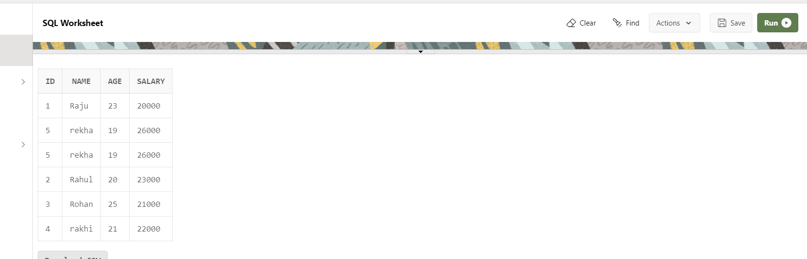
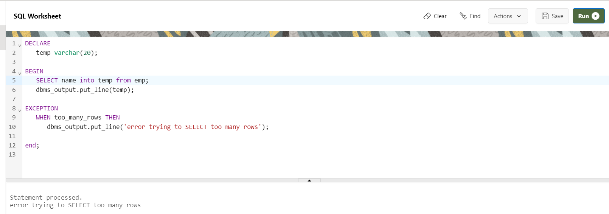
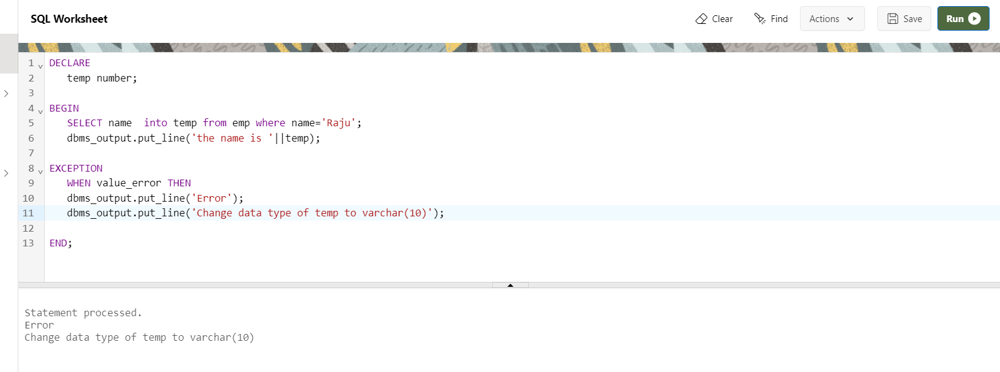
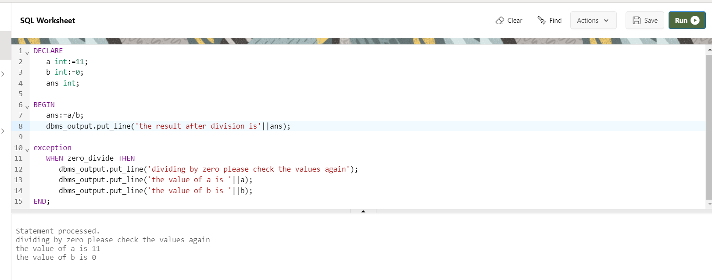
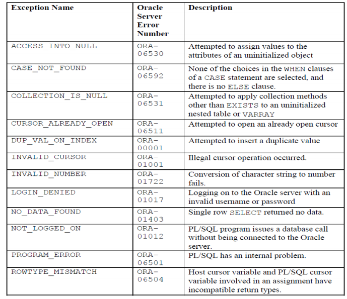

PL/SQL Exception Handling
An exception is an error which disrupts the normal flow of program instructions. PL/SQL provides us the exception block which raises the exception thus helping the programmer to find out the fault and resolve it.
There are two types of exceptions defined in PL/SQL
- User defined exception.
- System defined exceptions.
Syntax
DECLARE
declarations section;
BEGIN
executable command(s);
EXCEPTION
WHEN exception1 THEN
WHEN exception1 THEN
exception1-handling-statements
WHEN exception2 THEN
exception2-handling-statements
WHEN exception3 THEN
exception3-handling-statements
........
WHEN others THEN
exception3-handling-statements
END;
Table emp:-

1.NO_DATA_FOUND: It is raised WHEN a SELECT INTO statement returns no rows. For eg:
Example
DECLARE
temp varchar(20);
BEGIN
SELECT id into temp from emp where name='palak';
exception
WHEN no_data_found THEN
dbms_output.put_line('ERROR');
dbms_output.put_line('there is no name as');
dbms_output.put_line('palak in geeks table');
end;
2.TOO_MANY_ROWS:It is raised WHEN a SELECT INTO statement returns more than one row.
Example
DECLARE
temp varchar(20);
BEGIN
SELECT name into temp from emp;
dbms_output.put_line(temp);
EXCEPTION
WHEN too_many_rows THEN
dbms_output.put_line('error trying to SELECT too many rows');
end;

3.VALUE_ERROR:This error is raised WHEN a statement is executed that resulted in an arithmetic, numeric, string, conversion, or constraint error. This error mainly results from programmer error or invalid data input.
Example
DECLARE
temp number;
BEGIN
SELECT name into temp from emp where name='Raju';
dbms_output.put_line('the name is '||temp);
EXCEPTION
WHEN value_error THEN
dbms_output.put_line('Error');
dbms_output.put_line('Change data type of temp to varchar(10)');
END;

4.ZERO_DIVIDE = raises exception WHEN dividing with zero.
Example
DECLARE
a int:=11;
b int:=0;
ans int;
BEGIN
ans:=a/b;
dbms_output.put_line('the result after division is'||ans);
exception
WHEN zero_divide THEN
dbms_output.put_line('dividing by zero please check the values again');
dbms_output.put_line('the value of a is '||a);
dbms_output.put_line('the value of b is '||b);
END;

PL/SQL User-defined Exceptions
This type of users can create their own exceptions according to the need and to raise these exceptions explicitly raise command is used.
Syntax
DECLARE
my-exception EXCEPTION;
PL/SQL Pre-defined Exceptions
There are many pre-defined exception in PL/SQL which are executed when any database rule is violated by the programs.
For example: NO_DATA_FOUND is a pre-defined exception which is raised when a SELECT INTO statement returns no rows.
